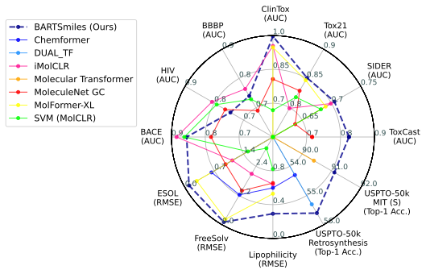
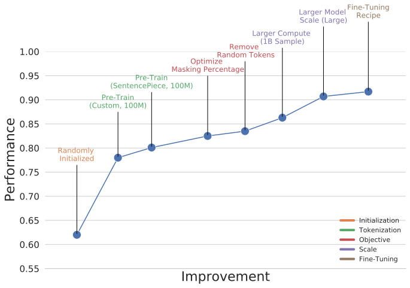
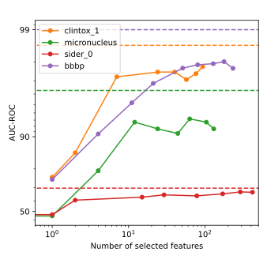
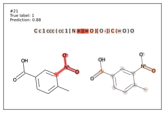
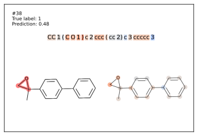
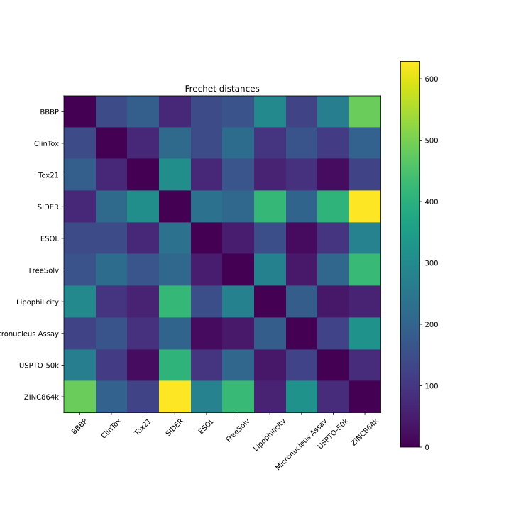

Self-supervised pre-training has transformed NLP, vision, and speech. Yet molecular machine learning — a field with massive implications for drug discovery, toxicology, and materials science — has largely been left behind in terms of scale. Most pre-trained molecular models train on 10M molecules or fewer, using encoder-only architectures borrowed from BERT.
BARTSmiles changes this. We pre-trained a BART-Large encoder-decoder on 1.7 billion unique molecules from the ZINC20 dataset using 1,024 A100 GPUs — an order of magnitude more compute than any prior molecular representation. The result is a model that sets new state-of-the-art on 11 downstream tasks spanning property prediction, chemical reaction prediction, and retrosynthesis.
But the numbers are only half the story. What surprised us most was what the model learned implicitly during pre-training.

Molecules are commonly represented as SMILES strings — a text-like notation where atoms, bonds, and rings are encoded as characters. This makes them natural candidates for language model pre-training. Prior work like ChemBERTa and SMILES-BERT used encoder-only (BERT-style) architectures, which limits them to classification and regression. By choosing BART's denoising encoder-decoder architecture, BARTSmiles can handle generative tasks too — predicting reaction products or working backward to identify starting materials.
We arrived at our final pre-training recipe through careful ablations, not just scaling. Two decisions proved critical:

Learned tokenization matters. Instead of hand-crafted chemical tokenization rules (splitting at each atom/bond symbol), we trained a SentencePiece unigram tokenizer. This yielded shorter sequences — more efficient training — and a 2.2-point AUC-ROC improvement over custom tokenization. The model learns sub-molecular "words" that are more expressive than character-level atoms.
Standard BART masking is suboptimal for chemistry. The default 30% mask token budget from the original BART paper underperforms. Through ablation, we found 20% works better, and — perhaps surprisingly — randomizing tokens (a staple of BART's denoising) actually hurts performance in the molecular domain. Chemistry has less redundancy than natural language; corrupting tokens beyond masking confuses more than it helps.
We evaluated BARTSmiles on 10 MoleculeNet benchmarks, 2 toxicology datasets, and 2 generative tasks. The highlights:
On regression, BARTSmiles dominates all three MoleculeNet tasks — reducing RMSE on ESOL from 0.279 to 0.095, on FreeSolv from 0.231 to 0.114, and on Lipophilicity from 0.529 to 0.292. These aren't incremental gains; they're 2–3× improvements over the previous best (MolFormer-XL).
On generative tasks, our sample-and-rerank strategy (128 samples reranked by perplexity) achieves 55.6% Top-1 on retrosynthesis, beating all baselines. On chemical reaction prediction, BARTSmiles outperforms the Molecular Transformer across every USPTO subset.
This is where things get fascinating. Inspired by the famous OpenAI "sentiment neuron" discovery in language models, we asked: does BARTSmiles learn individual neurons that encode chemically meaningful properties, without ever seeing labels?

The answer is a resounding yes. By extracting frozen representations and training L1-regularized logistic regression, we found that just 7 neurons from the pre-trained model achieve 0.987 AUC-ROC on ClinTox — within 1% of the fully fine-tuned model. A single neuron reaches 0.77. The model has essentially learned clinical toxicity as a latent concept during unsupervised pre-training on molecular structures alone.
We applied Integrated Gradients attribution to fine-tuned BARTSmiles models and compared the highlighted substructures with structural alerts — hand-curated rules that chemists developed over decades to explain molecular toxicity.


On the Ames mutagenicity dataset, BARTSmiles consistently highlights the exact atoms that domain experts flag as responsible for toxicity. Nitroaromatic compounds? The model zeroes in on the -NO₂ group. Epoxides? It finds the three-membered ring. This alignment with decades of expert knowledge emerges purely from pre-training on molecular strings and fine-tuning on labels — no graph structure, no 3D coordinates, no hand-crafted features.
On the ESOL solubility task, the model assigns positive attributions to polar groups like hydroxyl (-OH) and carbonyl (C=O) — which chemists know increase water solubility — and negative attributions to long hydrocarbon chains, which decrease it.
BARTSmiles doesn't dominate everywhere. On three scaffold-split classification tasks (HIV, BACE, BBBP), results are mixed — though we show that inconsistent splitting conventions across papers make fair comparison nearly impossible. More interesting is what we found by computing Fréchet distances between datasets in BARTSmiles' representation space:

Datasets like BBBP and SIDER are far from ZINC20's distribution. This is a fundamental coverage problem: 1.7 billion commercially available compounds in ZINC don't fully represent the medicinal chemistry space. We also found that traditional molecular fingerprints (ECFP) carry complementary information — concatenating frozen BARTSmiles features with ECFP and running an SVM closed the gap on toxicology tasks. Pre-trained representations and classical cheminformatics aren't substitutes; they're complements.
BARTSmiles demonstrates that the "scale + self-supervision" recipe that transformed NLP works for molecular ML too — but requires domain-specific tuning of the pre-training objective. The model doesn't just memorize; it develops an internal understanding of chemistry that aligns with expert knowledge.
The pre-trained model and code are publicly available at github.com/YerevaNN/BARTSmiles. We hope it serves as a strong foundation for computational chemistry research — and as evidence that the next breakthroughs in drug discovery may come from the unlikely marriage of denoising autoencoders and SMILES strings.